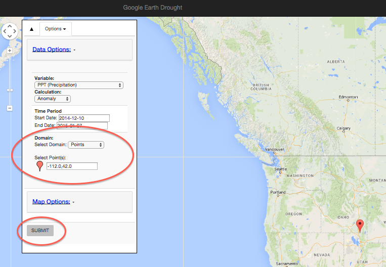
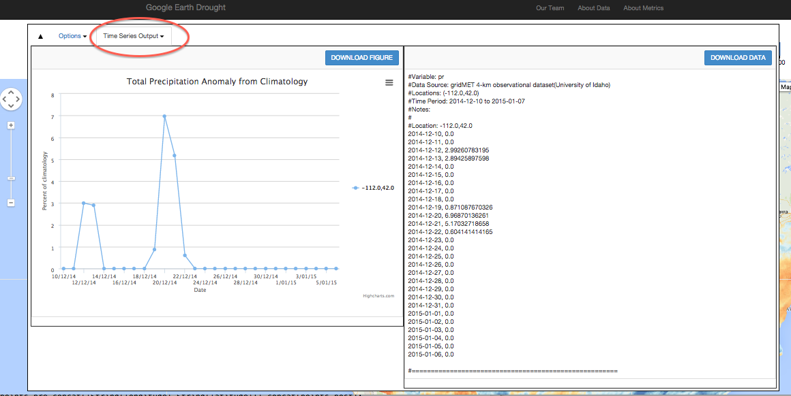

<!-- Modal -->
<div class="modal fade" id="tutorialModal" tabindex="-1" role="dialog" aria-labelledby="myModalLabel" aria-hidden="true" data-reveal>
 <div class="modal-dialog modal-lg">
    <div class="modal-content">
        <!----------------------------->
        <!--     HEADER             -->
        <!----------------------------->
        <div class="modal-header">
		<button type="button" class="close" data-dismiss="modal"><span aria-hidden="true">&times;</span><span class="sr-only">Close</span></button>
		<h2 class="modal-title" id="myModalLabel" style="color:red">Tutorial</h2>
		<p>With our drought tool, you can obtain either spatial maps or point time series for the chosen variables over the chosen time range.</p>
        </div>
        <div class="modal-body">
		<!----------------------------->
                <!----------------------------->
                <div class="row">
                    <div class="col-md-12 img-portfolio">
                        <h3>Time Series for Point Locations</h3>
			<hr>
			<table>
			<tr>
			<td width="30%" valign="top">
			<p>
			   <u><b><span style="color:red">STEP 1</span></b></u> Under 'Select Domain', choose 'Point' <br><br>
			   <u><b><span style="color:red">STEP 2</span></b></u> Choose your desired point location by either a) moving the map marker to the desired location
				or b) manually entering the coordinates	in the text input box under 'Select Point(s)'. <br><br>
				**Note that 
				the  points should be entered as a comma separated string, where the first number is the 
				East longitude (-180 to 180 deg) and the second number is the North latitude(-90 to 90 deg). 
				Points are separated by commas also. <br><br>
			   <u><b><span style="color:red">STEP 3</span></b></u> Click the 'Submit' button.
				</p>
			</td>
			<td width="10%">
			</td>
			<td width="70%">
                         <br>
			Figure 1: In order to get a time series at a point, the Domain must be set to 'Point'. <br>
			The Submit button submits the form for processing. 
			</td>
			</tr>
			 <tr>
                        <td width="30%" valign="top">
                        <p><u><b><span style="color:red">STEP 4 </span></b></u>After submitting the form, a 'Time Series Output' tab will 
			show up next to the 'Options' tab. Click the 'Time Series Output' tab <br><br>
                        <p><u><b><span style="color:red">STEP 5 </span></b></u>The time series for the point location will be shown with a
			 figure on the left depicting the time series
			and the data on the right, available for download. 
                                </p>
                        </td>
			<td width="10%">
			</td>
                        <td width="70%">
                         
                        </td>
			</tr>
			</table>	
                    </div>
                </div>
        	<!----------------------------->
       </div><!--modal-body-->
    </div><!--modal-content-->
  </div><!--modal-dialog-->
</div>
